Machine Learning for Healthcare Fraud Detection
by Margaret Bowers
Intro
Healthcare fraud costs insurers tens of billions of dollars annually. Given time constraints, it’s impossible to manually review each claim for possible fraud. Insurers have come to rely on machine learning algorithms to identify fraud patterns and bring to light features that are most predictive of fraud. While they are helpful, algorithms are still prone to errors. This project was an opportunity to explore type I and type II errors inherent to classification models. It also makes it possible to quantify the costs of these mistakes so that insurers can make the most informed decision in selecting the most efficient models for their investigations.
Data
The data sets I used were taken from Kaggle’s Healthcare Provider Fraud Detection Analysis training datasets.
They included beneficiary data, claims data (inpatient and outpatient), and provider labels with suspected fraud status. There was no data dictionary for me to refer to, so I composed my own based on my best understanding of industry terminology.
Data types included numerical features (reimbursements and deductibles), date features and categorical features such as beneficiary characteristics and billing and health condition codes.
Categorical feature cardinality is generally a concern for modeling. Some features (e.g. gender, race, and the 11 binary health conditions) were not complex, but many features were highly cardinal with over 100 different categories. This complexity was ultimately handled through feature engineering and resolved as the data was aggregated to the provider level.
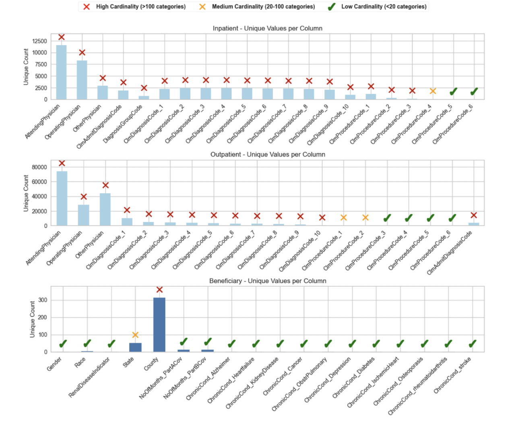
Missing data and feature engineering
There were a considerable number of missing values in the data, which can be seen at a glance in the following plots.
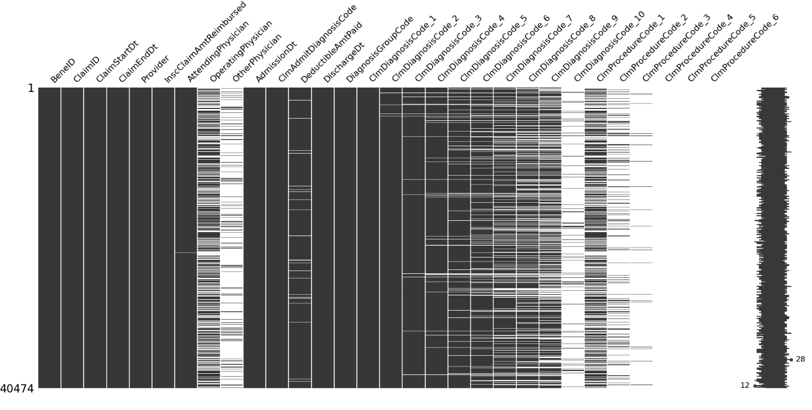
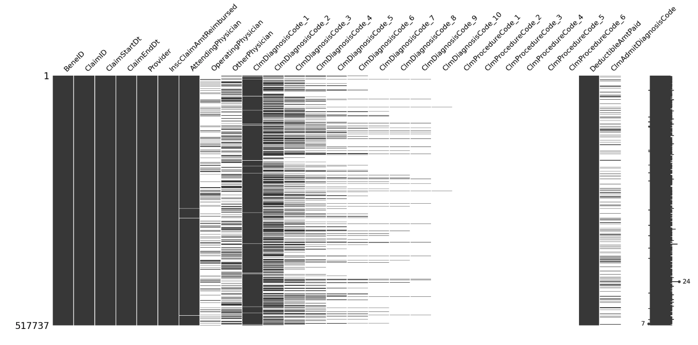
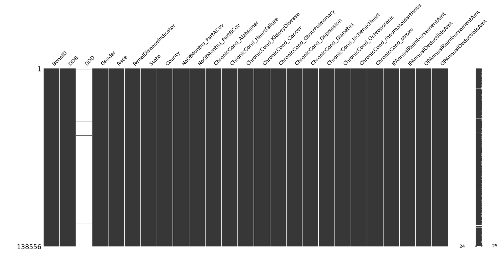
Missing values were handled either through imputation (0s for missing beneficiary DeductibleAmtPaid and ClmAdmitDiagnosisCode) or through feature engineering.
For the beneficiary data, I created a “number of chronic conditions” feature that counted the number of chronic conditions associated with each beneficiary. This is a measure of the overall health associated with each beneficiary and addresses the question, “are some providers associated with patients with more complex health conditions?” This in itself is not necessarily a measure of fraud, since providers may specialize in older or younger patients, but it retains some level of beneficiary data. Beneficiary data was also missing DOD values that I handled by creating an is_deceased feature.
I imported these and selected beneficiary features to the claims datasets and created a series of claim-level features, again with the ultimate goal of aggregating to the provider level. These features included:
- patient age at time of service
- duration of inpatient admission (length of hospitalization; inpatient only)
- duration of claim
- total claim amount (reimbursement + deductible paid)
- portion of total claim covered by insurance (reimbursement / total claim amount)
- number of unique diagnosis and procedure codes
I noticed a few things through the course of my EDA that helped direct my feature engineering. Inpatient providers suspected of fraud were filing 4-5 times as many claims per month as non-fraud providers. Fraud status was also associated with high physician ID reuse.
Taking that into account, the features I created at the provider level included:
- number of claims associated with each provider
- attending_ratio, operating_ratio, other_ratio, and patient_ratio (number unique IDs per number of claims, for each provider)
- number of states and counties associated with each provider
- monthly claim frequency
- total reimbursements over all the claims
From here, I aggregated all my data to the provider level and added the following features:
- number of unique diagnosis group codes (to retain a measure of group code diversity)
- number of patient races (to track patient diversity)
- mean gender
- mean deductible paid per claim (to determine if providers collect deductibles for every claim or if they tend to waive them)
- mean and std of numerical finance features (reimbursement, total claim amount), to understand not just how the means stack up, but to indicate significant variability among providers
- mean claim and admission durations (a basis for identifying claims open longer for some providers than others and if some providers’ patients tend to have longer stays in the hospital)
At this point I had inpatient and outpatient data for providers. I added _ip and _op suffixes to each dataset (to track them separately) and a column indicating whether a provider has an inpatient practice or an outpatient practice to see if practice type by itself was an indicator of fraud. I then aggregated at the provider level and combined both datasets into a single, provider-level dataframe.
There are a few things to notice about this provider data. First, there are a lot of missing values. While there were 5410 providers in total, only those with both inpatient and outpatient practices have complete data for all the features, making the dataset sparse.
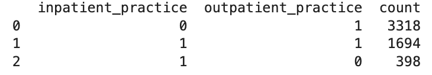
Second, the classes are imbalanced, with providers suspected of fraud representing the minority class.
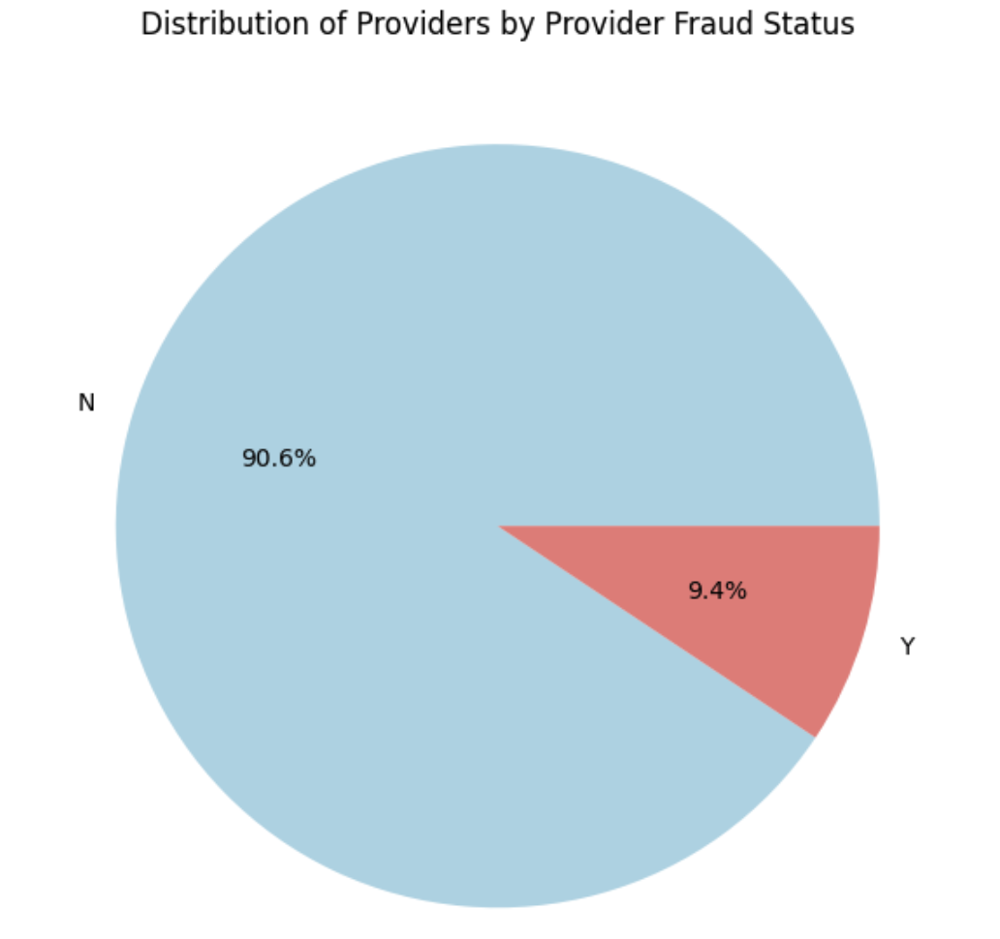
These characteristics of the data persuaded me to choose algorithms that would handle missing features and class imbalance well. I chose to focus on logistic regression (as a baseline) and ensemble tree models, including Random Forest, LightGBM, XGBoost, and CatBoost. While this was straightforward for the ensemble models, logistic regression does not handle missing values or class imbalance naturally, so I created an imbalanced model for reference, as well as a balanced model using SMOTE training data.
For the ensemble methods, I set balancing parameters for each algorithm to handle the class imbalance and left them to handle missing values internally. I split my data, trained my models, and evaluated on imbalanced test data.
Model Evaluation
In evaluating my models, I considered several metrics in combination with one another, starting with accuracy. I expected it to be overoptimistic due to the class imbalance. I also looked at precision-recall as a better measure of imbalanced performance. Finally, I considered the costs of false negatives and false positives in order to measure the economic impact of model misclassification. I experimented with tuning but did not find it particularly helpful for my analysis.
Looking at ROC-AUC and pr-AUC curves for all the models allowed me to compare their performances.The ROC-AUC curves confirm that the models are overoptimistic due to the imbalanced data.
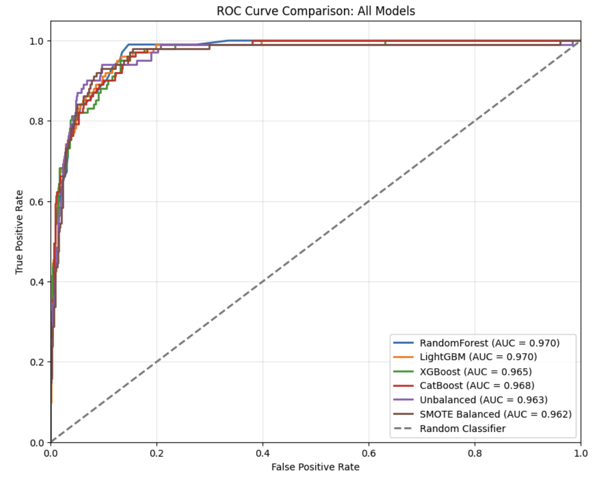
The pr-AUC curves remove the dependence on the over-represented majority class and is a better measure of model performance for this data. LightGBM had the best performance, and the SMOTE balanced logistic regression model was the worst of the lot.
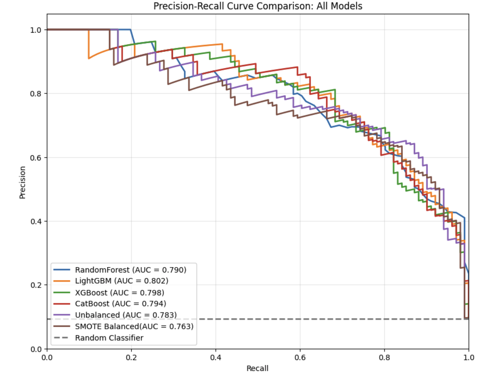
Overall, the models are performing similarly. Ast I was really interested in understanding how they would stack up in a business context, I looked at each model’s confusion matrix and evaluated the costs associated with type I and type II errors.
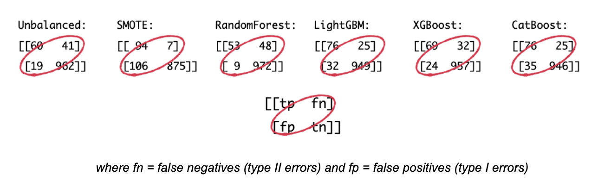
Type II errors include all the actual fraud that is misclassified by the model or fraud that escapes detection. Type I errors include instances of non-fraud that are mistakenly classified as fraud, potentially drawing down resources in unnecessary investigations. This is where the meat of model evaluation lies. It is difficult to pinpoint an exact numerical cost for each type of mistake. However, we can see how the models diverge under different assumptions. To illustrate this I considered 3 scenarios:
fps and fns cost the same
fns are 10 times as expensive as fps
fns are 100 times as expensive as fps
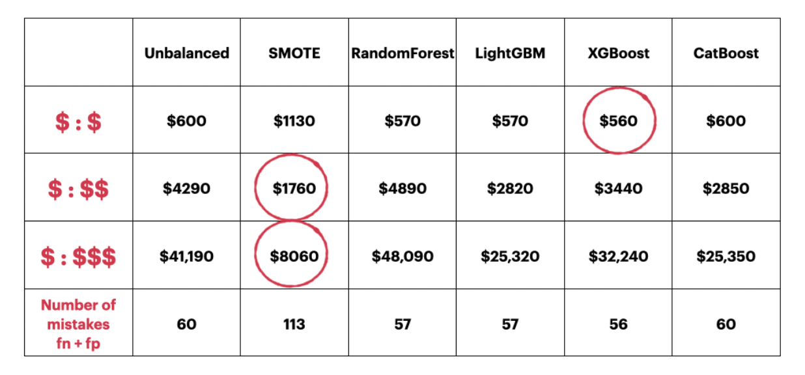
The cost of each model scenario represents the loss incurred due to misclassification based on the estimated cost relationship for each mistake. All mistakes being equal (scenario 1), XGBoost costs the least. As the costs of false positives and false negatives diverge (scenarios 2 and 3), the SMOTE logistic regression model becomes more cost efficient than the other models. While SMOTE is making more mistakes overall, it is making fewer expensive mistakes.
In a healthcare setting where the cost of missed fraud is significantly higher than the cost of mislabeled non-fraud, this is an essential metric to consider. It is safe to assume, based on industry standards, that mistakes are not equal. Consequently, the choice of threshold is significant. Considering scenarios where mistakes differ by 1 and 2 orders of magnitude illustrates the impact.
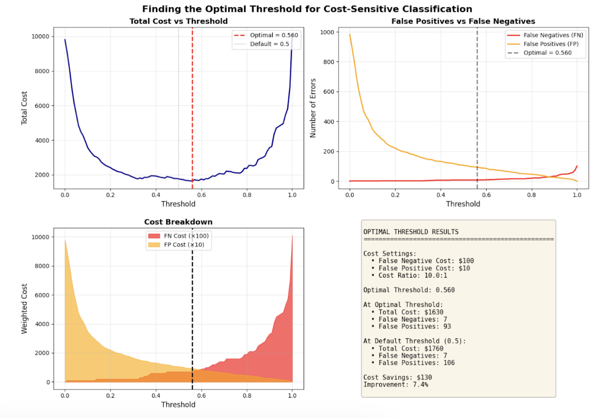
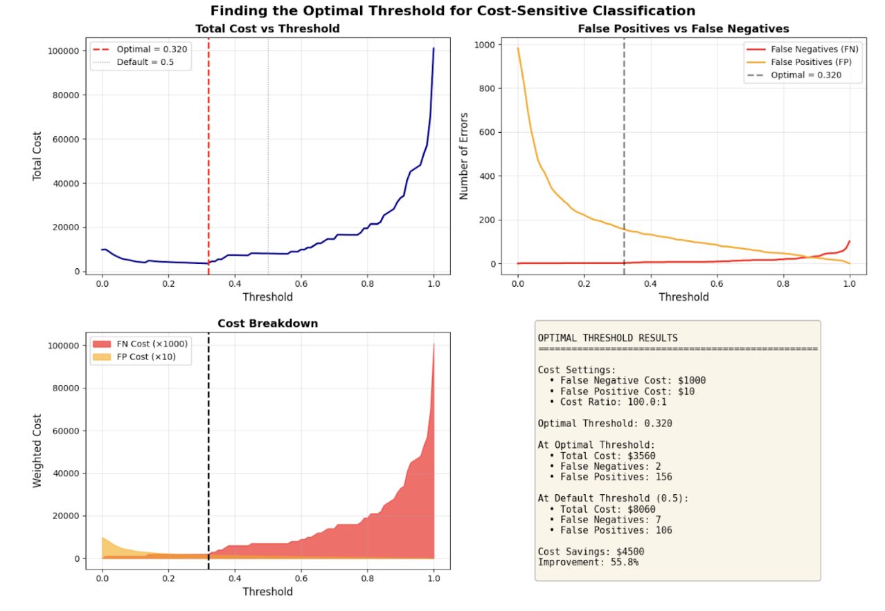
The optimal threshold is defined for where the total cost in mistakes is a minimum. The cost savings is a measure of how much the choice of threshold differs from the default scenario. For mistakes that differ by one order of magnitude, the default threshold of 0.5 is very close to optimal. Based on what I read online, this could be a good ballpark for health insurance fraud. If the difference is much higher, the threshold should be lowered to minimize economic loss.
Tuning this threshold appropriately depends on the insurer’s particular risk assessment and requires more information. Once these costs have been defined, the right model can be chosen for that insurer. From there, the features most predictive of fraud can be extracted to assist industry in how to prioritize their fraud investigations.
Future Work
I was not expecting my SMOTE logistic regression model to be the best fit for this analysis and would like to revisit my imputation scheme to understand how it compares to the ensemble models. For the purpose of this project, and for simply exploring each model’s economic cost, my imputation scheme was a fine entry point, but I had concerns about how feature means and standard deviations were impacted. Without diving into how the ensemble models handled these missing values, it was not readily apparent how imputation methods compared across algorithms. Before recommending the SMOTE logistic regression model, I would like to dig into this more thoroughly.
This dataset offers a lot of opportunity for further exploration. Once the business metrics are defined, there is opportunity to revisit the dataset and explore patterns within the group of suspected fraud providers. It would be interesting to use Market Basket Analysis to uncover patterns in billing behavior and to explore patient profiles associated with providers suspected of fraud to get a more nuanced understanding of fraudulent practices.